Registros de Hallownest
Há muito tempo, antes que o reino mergulhasse em silêncio, viajantes, exploradores e mercadores percorriam as antigas estradas de Hallownest. Foi durante essa era que esta loja abriu suas portas, oferecendo equipamentos e relíquias àqueles que se aventuravam pelas profundezas.
Muitos dos artefatos encontrados aqui foram recuperados de ruínas esquecidas, túneis abandonados e vilarejos consumidos pelo tempo. Alguns carregam histórias conhecidas. Outros permanecem envoltos em mistério.
Nossas Relíquias
Entre as prateleiras repousam amuletos antigos, fragmentos de máscaras, mapas desgastados e tesouros trazidos dos confins do reino. Cada item possui sua própria história e aguarda um novo portador.
Uma Nota do Mercador
"Poucos ainda atravessam estas estradas esquecidas. Ainda assim, mantenho minhas portas abertas para aqueles que procuram algo além de Geo. Caso encontre algo de valor em suas viagens, talvez possamos negociar."
— O Mercador